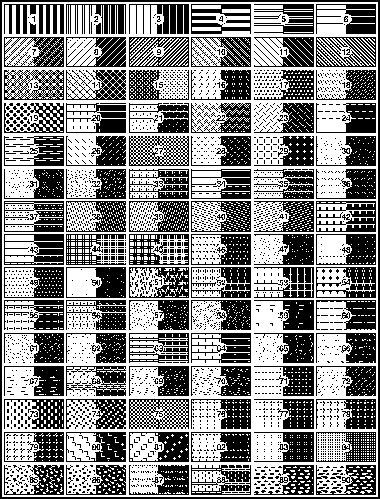

5.5 填充¶
用画笔绘制了圆形或多边形之后，还需要为其填充颜色。在GMT模块的语法介绍中，一般用
<fill> 表示需要指定填充属性，读者在见到 <fill> 时应自动联想到本节介绍的内容。
填充 <fill> 有两种方式/形式：填充颜色和填充图案。GMT 的模块中通常使用
-G<fill> 选项来填充颜色，本节以该选项为例。
5.5.2 填充图案¶
还可以给区域填充图案（pattern），比如地质填图里经常会给不同区域填充不同的图案以区分不同的地质时期。其语法为:
-G[p|P]<pattern>[+b<color>][+f<color>][+r<dpi>]
<pattern> 有两种取法：
- 取1到90内的整数，表示使用GMT提供的90种预定义的64x64位图图案
- 取文件名，表示使用自定义的1、8、24位Sun光栅文件作为位图图案
+r<dpi> 设置了位图图案在当前页面上的分辨率。 <dpi> 越大，则区域内位图重复的次数越多；若设置 <dpi> 为0，则根据 gmt.history 中的内容决定所能使用的最大分辨率。
若使用 -GP 而不是 -Gp ，则图案会发生位反转，即白色区域变成黑色，黑色区域变成白色（仅对1位位图或GMT预定义位图图案有效）。
对于GMT预定义的图案以及用户自定义的1位位图来说，可以用 +b<color> 和 +f<color>
分别设置图案的前景色和背景色，以分别替换默认的黑色和白色像素点。若设置前景色或背景色为 - ，则视为前景色或背景色为透明。
下图列出了GMT中预定义的90种位图图案（右键查看大图并放大才能看到差异），所有图案都是使用默认的黑白色在 <dpi> 取300的环境下生成的。每张小图中左半部分使用
-Gp 绘制，右半部分使用 -GP 绘制。

{kind=link}
图 5.4 GMT内置位图图案
5.5.3 填充小结¶
GMT中通常使用 -G 选项填充多边形或符号。有两种填充方式，分别是：
- 填充颜色：
-G<color> - 填充图案：
-G[p|P]<pattern>[+b<color>][+f<color>][+r<dpi>]
下面给出了一些填充的示例：
-G128-G127/255/0-G#00ff00-G25-0.86-0.82-GDarkOliveGreen1-Gp7+r300-Gp7+bred+r300-Gp7+bred+f-+r300-Gpmarble.ras+r100
读者可以将下面命令中的 <fill> 修改为不同的值并查看效果以理解这一节的内容:
echo 5 5 | gmt psxy -JX10c/10c -R0/10/0/10 -Baf -Sc2c -G<fill> > test.ps
注解
- 由于PostScript实现的限制，
-G选项里使用的光栅图片必须小于146x146像素；若要使用更大的图像，需要使用psimage - 在PostScript Level 1下，图案填充是通过使用多边形做路径裁剪实现的。复杂的裁剪路径会需要更多的内存，因而可能导致某些PS解释器由于内存不足而退出。在这种情况下，建议使用灰度填充区域。